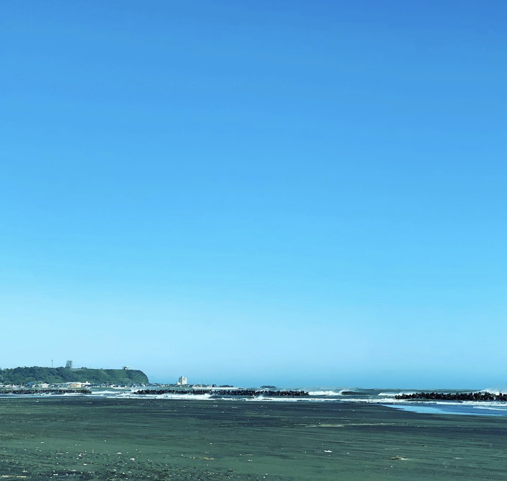

01
未経験からでも、
順番に職人になれる
いきなりミシンを踏むことはありません。両面テープでのパーツ仮止めから始まり、ネームタグの縫い付け、決まった縫い代での本縫い、立体への組み立てへ。工程を分けて、一つできたら次へ進みます。工業用ミシンは家庭用と扱いが違うので、経験の有無はほとんど関係ありません。

02
自分の手が、
店頭に並ぶ製品になる
手がけるのは有名ブランドのバッグや小物。革、帆布、ナイロンと素材はさまざまで、素材ごとにミシンも針も糸も替えます。品質と短納期の両立が私たちの評価される理由であり、日々技術と品質を磨き続けている理由でもあります。

03
海が見える工房と、
10人の距離感
クルーは10人。全員の顔と手元が見える人数なので、分からないことはその場で聞けます。作業場は清潔に保ち、休憩にはストレッチの時間も。マイカー通勤ができて駐車場もあり、転勤はありません。地元で長く働きたい方に向いています。